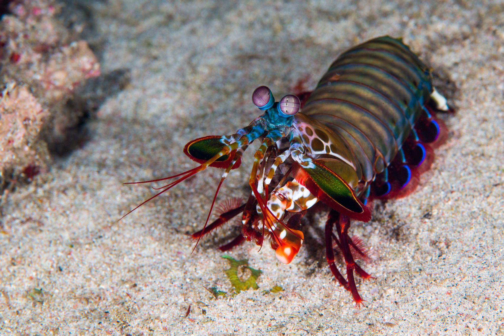

Fatos sobre o Stomatopoda
Informações Gerais
O camarão mantis é o nome dado aos crustáceos marinhos do “Stomatopoda” ordem. Seu nome científico é Odontodactylus scyllarus. A origem desses crustáceos remonta a 400 milhões de anos, tornando-os entre os animais mais antigos do planeta. Os antigos assírios chamavam o camarão mantis "Mar gafanhoto" enquanto seu nome na Austrália moderna é o "Assassino de camarão. " O camarão mantis é uma iguaria em muitos países ao redor do mundo e é preparado fervendo, fritando ou grelhando.
| Classificação Científica | |
|---|---|
| Reino: | Animalia
|
| Filo: | Arthropoda
|
| Subfilo: | Crustacea
|
| Classe: | Malacostraca
|
| Subclasse: | Hoplocarida
|
| Ordem: | Stomatopoda
|